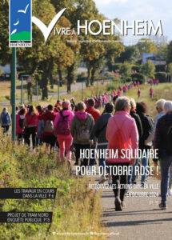
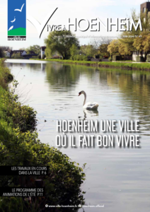
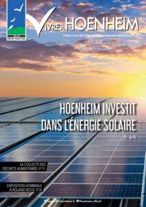
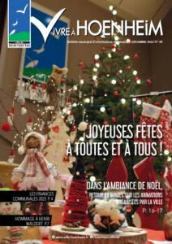

Le mag
Vivre à Hoenheim N° 64

Le magazine Vivre à Hoenheim n°64 de décembre 2024, vient de paraître. Dans cette édition découvrez entre autre les travaux en cours dans la ville, du nouveau aux marchés de Hoenheim, des actions solidaires, la visite de l’épicerie sociale, la récolte record pour Octobre rose, les changements à l’école de musique, un retour sur les […]
Vivre à Hoenheim N° 63

Le magazine Vivre à Hoenheim n°63 de septembre 2024, vient de paraître. Dans cette édition découvrez entre autre la rentrée scolaire, les travaux en cours dans la ville, les actions dans la ville pour Octobre rose, l’enquête publique sur le projet du Tram Nord, l’évaluation de l’EHPAD Les Colombes, l’agenda des prochains évènements, un retour […]
Vivre à Hoenheim N° 62

Le magazine Vivre à Hoenheim n°62 de juin 2024, vient de paraître. Dans cette édition découvrez entre autre les tra aux en cours dans la ville, un projet au multi-accueil, le programme de l’été, les prochaines réunions de quartier, un retour sur les discussions avec STEF, un nouveau spécialiste dans la détections des punaises de […]
Vivre à Hoenheim n°61

Le magazine Vivre à Hoenheim n°61 de mars 2024, vient de paraître. Dans cette édition découvrez entre autre le projet d’installation de panneaux photovoltaïques, la mise en place de la collecte des déchets alimentaires, un retour sur les vœux du Maire, les prochaines réunions de quartier, la partage de la galette, un nouveau centre de […]
Vivre à Hoenheim n°60

Le magazine Vivre à Hoenheim n°60 de décembre 2023, vient de paraître. Dans cette édition découvrez entre autre les finances communales 2023, un hommage à Henri Waldert, la sortie et la fête des Seniors, la solidarité avec le vestiaire solidaire de la Conférence de St-Vincent de Paul, une deuxième édition d’octobre rose réussie, des projets […]